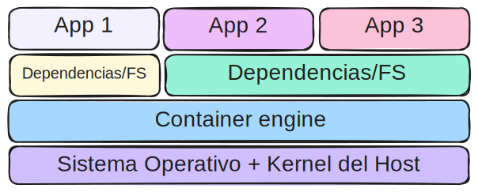

Fundamentos y usos prácticos de Docker
Clase 1 : Introducción al curso y contenedores
Introducción al curso
Presentación
Instructor: Cristian O. Giambruni
Contacto: cgiambruni@gmail.com
APU. UNLP
Docente CFL 410
Sysadmin Lotería BsAs
Programador y Sysadmin Startup
Objetivos del curso
- Introducir y mostrar ventajas del uso de contenedores
- Prácticas sobre contenedores
- Mas y más
Introducción a contenedores
Contenedor
En informática, un contenedor o container, es una unidad ligera y portátil de software que empaqueta una aplicación y todas sus dependencias, permitiendo que se ejecute de manera consistente en cualquier entorno.

Entonces... ¿Para qué vamos a usar contenedores?. Para poder portar nuestra aplicación y ejecutarla de la misma manera en nuestra PC que en cualquier ambiente de desarrollo.
Un poco de historia
Años 1960-1970, se introduce la virtualización en los mainframes de IBM que permite ejecutar múltiples sistemas operativos en una sola máquina física.
En 1992, el programador finlandés Linus Torvals publica bajo licencia GNU GPL2 la versión 0.12 del kernel de Linux. De ahí en más, Linux es software libre.
En 2008 surge LinuX Containers, también conocido por su acrónimo LXC. Aprovechando las características del kernel de Linux como cgroups y namespaces disponibles a partir de la versión 2.6.29 del kernel, permite desarrollar una tecnología de virtualización a nivel de sistema operativo. LXC permite que un servidor físico ejecute múltiples instancias de espacios de usuario aislados dando origen al término container.
En 2013 se libera Docker como código abierto inicialmente basado en LXC. Pero al año siguiente, con el lanzamiento de la versión de Docker 0.9 dejó de utilizar LXC para usar su propio engine llamado libcontainer, escrito en Go.
Desde entonces Docker ha crecido en popularidad colocándose como los proyectos con mas estrellas de GitHub, mas forks y con miles de colaboradores.
Máquinas virtuales
Muchas veces cuando introducimos al concepto de contenedor, viene la confusión si no es un tipo de máquina virtual. Repasemos conceptos de máquina virtual:
Una máquina virtual (VM) es un entorno aislado que emula un sistema informático completo, permitiendo ejecutar un sistema operativo y aplicaciones como si fueran una computadora física, utilizando recursos compartidos del hardware del host. Para llevar a cabo estas tareas se requiere de un hypervisor.
Cada máquina virtual necesitará de asignación de recursos: procesador, disco, memoria, red, etc y un sistema operativo.
- Hypervisores mas conocidos
- VMware sShere/ESXi
- Hyper-V
- VirtualBox
- Proxmox VE
Arquitectura Máquinas virtuales
Cada máquina virtual necesitará de un sistema operativo completo (kernel, utilidades del sistema, interfaz de usuario, etc) para funcionar.

Eso hace que, para correr solo una aplicación (o parte de una aplicación mas grande) sea necesario instalar y mantener un sistema opearativo completo por cada VM. Muchas veces, ocupa mas recursos el SO que la aplicación en sí.
Arquitectura Contenedores
Cada container, utiliza el kernel del sistema operativo del host. Solo contienen las aplicaciones y sus dependencias necesarias para funcionar.
Se benefician del aislamiento a nivel de proceso proporcionado por el kernel del host. Incluso entre dos containers pueden compartir sus dependencias.
Containers vs. VM
Como resumen, podemos repasar con la siguiente tabla:
Esto no quiere decir que las VM sean obsoletas frente a los contenedores. Algunas veces NO podremos usar contenedores. Por ejemplo, si se requiere de un sistema operativo Windows para una aplicación en particular.
Existen varias tecnologías que utilizan contenedores: LXC, LXD, Docker, Podman, containerd, Kubernetes, OKD...
¿Preguntas?
Introducción a Docker
¿Qué es Docker?
Docker es una plataforma de código abierto que facilita la creación, despliegue y ejecución de aplicaciones dentro de contenedores. Docker permite a los desarrolladores empaquetar una aplicación con todas sus dependencias en un contenedor, asegurando que la aplicación se ejecute de manera consistente en cualquier entorno.
- ¿Por qué Docker?
- Comunidad: Existe una gran comunidad aportando tanto al desarrollo de Docker como imágenes. Foros, tutoriales, cursos online.
- En constante desarrollo
Componentes de Docker
Docker componentes
- Docker engine: El motor de Docker es la parte central de Docker, que permite a los usuarios crear, ejecutar y gestionar contenedores.
- Images: Una imagen Docker es una plantilla de solo lectura que define qué software y configuraciones incluye el contenedor. Las imágenes son inmutables y se pueden versionar.
- Containers: Un contenedor Docker es una instancia en ejecución de una imagen. Los contenedores son entornos aislados donde se ejecutan aplicaciones.
- Registry: También conocida como DockerHub es un registro de imágenes de contenedores públicas y privadas. Los desarrolladores pueden usar Docker Hub para buscar y descargar imágenes, así como para compartir las suyas propias.
- Dockerfile: Un Dockerfile es un archivo de texto que contiene una serie de instrucciones sobre cómo construir una imagen Docker. Define el contenido de la imagen, incluyendo el sistema operativo base, las dependencias y las configuraciones de la aplicación./li>
Código
Linea 1
Linea 2
Output
Lalala
Lala